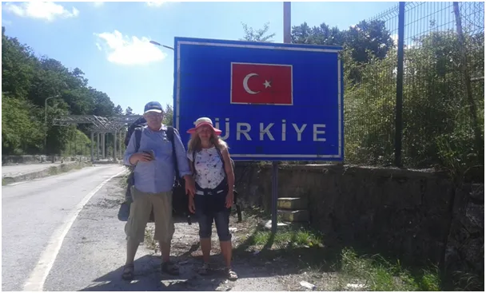

WHO: Trzeba podróżować, niepodróżowanie szkodzi!
Dziś dzień mediowych cytatów, ale wymagają one krótkiego komentarza.
Byłem pierwszy. W lipcu 2020 poleciałem pierwszym samolotem do bułgarskiego Burgas, aby dalej pieszo dotrzeć do Turcji. Oczywiście w samolocie miał być wolny co drugi fotel, bo wiadomo, mały wirus nie przeleci 50 cm, skrzydeł nie ma ;) Samolot był pełen i wszyscy zajadali orzeszki, aby móc mieć zsuniętą maskę. Wakacje były rewelacyjne, w jednej z największych atrakcji turystycznych świata w Efezie, byliśmy jedynymi turystami i żyjemy do dziś!

Tyle wspomnień, mamy 2022, pandemia w Polsce się dopiero rozkręca a szef WHU mówi "latajcie". Jeśli mielibyśmy do czynienia z czymś niebezpiecznym wszyscy siedzielibyśmy w domach a wojsko podawałoby nam jedzenie przez okno na sznurku.
Komunikacja międzynarodowa byłaby ograniczona do minimum, bo to ludzkie interakcje są mechanizmem roznoszenia wirusa. Innego sposobu nie ma, bajki o zabójczych klamkach od dwóch lat mamy za sobą, no chyba, że ktoś te klamki oblizuje.
Wirus jako idealny zastępczy powód wszystkich nieszczęść jest jak magiczny plasterek na Polski Ład(t), zasłania obraz katastrofy, odwraca uwagę od dodruku pustych pieniędzy. Nasz rząd będzie miał wielkiego pecha, jeśli to byłby koniec.
Ale od czego głowa! W Polsce daje się na dobę zrobić ok. 100-120 tys. testów, to wydajność graniczna laboratoriów. Zimą wychodzi 30% "plusów", więc przekroczenie 35 000 "zakażeń" jest niemożliwe. Szału nie ma, ludzie już przywykli. Co robić, co robić ? Wiem, bo oglądałem dziś konferencję prasową premiera! W aptekach otwieramy punkty testowe! Dla zachęty skrócono też kwarantannę do tygodnia, żeby naród się nie bał, że bez flaszki zostanie na dwa tygodnie. Tydzień "domówki" da się jakoś zorganizować! Nie mówili, kto płaci za te testy. Jak będzie promocja to 100 tys. zakażeń mamy spokojnie na dobę, jak za darmo będzie to stawiam na 200 tys. zakażonych w "szczycie fali" lutowej. Znów będziemy w czołówce światowej, jak za Gierka! A nawet lepiej, bo dalej niż do Bułgarii można pojechać/pójść.
Paweł Klimczewski